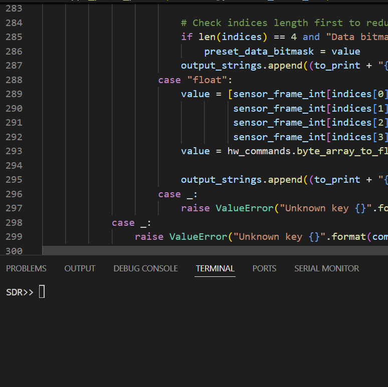

SDEC - Sun Devil Rocketry
Most of SDR's work is open source. See this project for yourself.
Before reading this page, I highly recommend reading about the Flight Computer.
About
Capabilities
SDEC is our primary way of communicating with SDR's embedded computers. It is a command line interface written in Python that provides a number of commands to interact with our hardware over USB. Below is a non-exhaustive list of some of our most important commands.
| Command | Subcommand | Description |
|---|---|---|
| Connect | [none] | Manages a serial connection with the attached board. |
| Comports | [none] | List the serial ports on your PC to identify where the hardware is connected. |
| Preset | Upload | Parse a preset data file, serialize the contents, and pass it to the flight computer to be used in flight. Computes a checksum for data validity. |
| Preset | Download | Download the presets that are currently on the flight computer, deserialize the contents, and write it to a file. |
| Preset | Verify | Tell the flight computer to recompute the checksum over the presets, compare it to the original, and send the result. |
| Flash | Erase | Clear the entirety of flash. |
| Flash | Extract | Download the contents of flash memory, including preset data (if applicable) and sensor data. |
| Sensor | Poll | Check specific sensor values and log them to console continuously. |
| Sensor | Dump | Output all sensor values to console continuously. Used extensively in the Flight Dashboard, which is in development by the software team. |
My Contributions
The development of SDEC is tightly coupled with the flight computer's firmware. If we add a sensor, we need to update SDEC at the same time to recognize the difference in the schema. Because of this, even though the firmware is my main focus, I've done a fair amount of work on SDEC.
- Developed a feature to parse preset data on both the original Canard application and now for our most recent app's more comprehensive config system.
- Designed and built a system to upload configuration data instead of needing to change source code.
- Updated the flash parser to let programs decide what data they want to log in flight, increasing practical runtime.
- Fixed a longtime bug where flash extract would hang while parsing due to flight computer timeouts and a non-empty serial buffer.